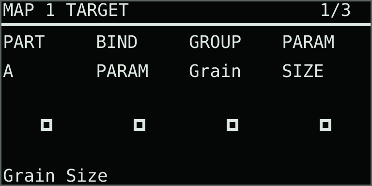
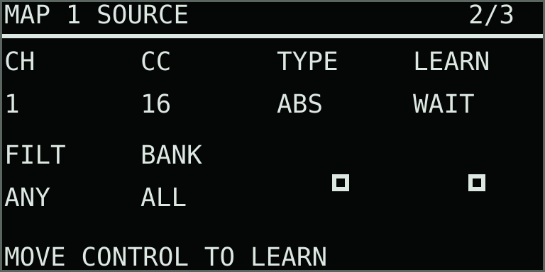
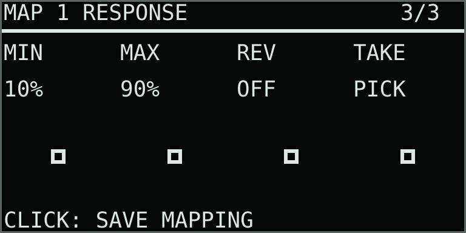

External control
MIDI control
Play notes and pressure independently from parameter control. Create a Custom CC profile for your controller, or choose high-resolution NRPN, eight page-following CCs, the MNLT direct-CC bank, the dedicated OXI E16 Remote surface or a native E16 + Monolit route.
0.30.0 draft: this guide describes the current 0.30.0-test.55 controller interface. The published installer remains at 0.29.1. Use the matching local testing package to try these controls.
MIDI options at a glance
| Option | Messages and channels | Best use |
|---|---|---|
| Note input | Notes, sustain, pitch bend, wheel and pressure on channels 1–4 | Play parts A–D from keys, pads or a sequencer. This remains active regardless of parameter mode. |
| NRPN | 14-bit NRPN on channels 5–8 for A–D; channel 16 for shared controls | Full, stable parameter addressing and two-way feedback. |
| Custom profile | Learned or manually assigned channel/CC addresses | Fixed A–D or Focus targets, adaptive engine slots, commands and controller banks. |
| Generic CC | Eight consecutive absolute CCs on a configurable channel | A small controller that should follow the eight controls visible on Move. |
| MNLT direct-CC bank | Channels 9–12 for A–D; shared controls and commands on channel 13 | Simultaneous part control from Light Reft Monolit or another multi-control surface. |
| OXI E16 Remote | Dedicated Schwung surface using E16’s display, encoders and RGB rings | Readable pages with formatted names, values and feedback. |
| E16 + MNLT | E16 relative CC on channels 14–15; Monolit absolute CC on 9–13 | One direct USB connection to Move, with Monolit entering E16 over TRS MIDI. |
| Clock and transport | MIDI real-time messages | External synchronization; unaffected by parameter-mode selection. |
Keyboard and sequencer input
While takeover is active, USB-A keyboard notes play Thru exclusively. Thru reads the original input channels directly and prevents those note-ons from also playing Move’s native instrument. Native track MIDI Out does not need to be enabled, and track levels and MIDI settings are left unchanged.
Additional isolation check: before opening takeover, set native Move’s MIDI In = Off and MIDI Out = Off on its MIDI tracks. Open those settings with Shift + the relevant Track button. Thru receives the USB input directly while active. These are separate from Thru’s MIDI Control MODE and from MIDI Sync; clock input can remain enabled when needed. Stop native Move clips before takeover: disabling note input/output does not mute a clip already playing.
Connect a class-compliant USB MIDI keyboard or sequencer to Move’s USB-A port. Open Capture + Menu → MIDI → MIDI Notes (page 2/3). Note input works with every MIDI Control MODE, including Off. Move’s pad scale, octave and Slices/Cues/Rolls layouts do not remap external notes. Pitched engines use the notes sent by the controller; the Slices engine uses them to select slices.
| Instrument mode | Channel | What it plays |
|---|---|---|
| Single | 1 | A; up to eight voices. |
| Split / Shared Dual | 1 / 2 | A / B; four voices each. |
| Quad | 1 / 2 / 3 / 4 | A / B / C / D; two voices each. |
| Bank | 1 / 2 | A plays pitched notes. B notes 60–75 trigger Bank slots 1–16, at each slot’s stored rate. Empty slots stay silent; MIDI does not start Bank recording. |
This table applies with ROUT set to Parts. With Focus, only CHAN is accepted and new notes play the part selected on Move. A released key or sustain pedal still releases its original part if you change focus while holding it. Other note channels are ignored. Physical pads and external keys share the existing voice budget.
| Knob | Display | Values | What it controls |
|---|---|---|---|
| 1 | ROUT | Parts / Focus | Note routing. Parts uses the fixed channel table above; Focus plays the selected part. Default Parts. |
| 2 | CHAN | 1–4 | Focus input channel; ignored by Parts routing. Default 1. |
| 3 | BEND | 0–24 st | Pitch-bend range in either direction. Default ±2 semitones. Center is unbent; movement is smoothed. |
| 4 | WHEL | Off / Stack / Character | CC 1 destination. Stack adds lane-position offset; Character drives the engine’s Character behavior. Independent of Pressure mode. Default Off. |
| 5 | VELO | 0–100% | Velocity-to-volume depth for newly played external notes. 0% keeps full level; 100% follows note velocity. Move pad volume is unchanged. Default 0%. |
| 6 | SYNC | Internal / Move | Internal uses Thru’s BPM. Move follows incoming MIDI clock supplied by Move/Schwung. Default Internal. |
| 7 | RUN | Tempo Only / Follow Clips | Tempo Only leaves clip playback under local control. Follow Clips lets Start begin the current clip at zero, Stop pause it, and Continue resume. Default Tempo Only. |
| 8 | □ | Reserved | Available for a future control. |
Playing slices from MIDI
Set the part’s ALG to Slices. The part’s Root note triggers slice 1; each semitone above Root selects the next slice. For example, with Root at MIDI note 60, notes 60, 61 and 62 trigger slices 1, 2 and 3. Notes wrap after the last available slice; notes below Root trigger slice 1.
All keys use the engine’s SPEED without additional keyboard transposition. Pitch bend and an Engine List entry’s octave setting can still change pitch deliberately. Equal and transient regions both follow this mapping, including recorded performance clips. The Move PADS layout can remain Keys; MIDI slice selection follows the voice’s engine. Channel routing uses the table above, and each part uses its own Root.
Expression and recording
CC 64 sustains notes at values 64–127 and releases pedal-held notes at 0–63. Pitch bend, channel pressure and polyphonic pressure affect external notes in the addressed part. Pressure follows the part’s Pressure setting. CC 121 resets bend, wheel, channel pressure and sustain; CC 123 releases external notes on that input channel, while CC 120 uses a short safety release. Neither clears Move pad latches.
Performance recording includes notes already held when recording starts, pedal-extended note lengths, bend, wheel, pressure and velocity response. The clip recalls that expression without needing the controller connected. Poly, Mono and Legato use the part’s VOICE setting independently of the Move PADS layout. Legato changes pitch while retaining the current playhead, and releasing the newest key returns to the previous held key. Physical Slices, Cues and Rolls pads keep their separate playing behavior. Bank B remains a slot-trigger instrument.
Sequencer gates and moving playheads
Sequencer note duration controls the note’s held gate. A note-off starts the Amp Envelope release; delay and reverb tails can continue afterward. For a clear timing check, choose a short REL and turn delay/reverb down. CC 64 sustain can extend the gate until pedal release. In Bank, PLAY = ONE completes the sample; PLAY = LOOP follows the held gate.
A held MIDI note advances through the selected engine like an equivalent Move pad note. Forward or one-shot playback can reach the end of its source before a long gate closes; use looping playback when you need it to continue. Stack scan runs independently of the note length. Loop/Stack Hold or Pressure = Brake can deliberately hold its lane position; the sample playhead can continue moving. Legato changes the current voice’s pitch without starting another playhead. Pitched engines use the transmitted notes, so test at the same pitch as the Move pad when comparing speed. Slices uses the key as a slice address at the engine’s SPEED.
Repeated note-ons on the same input, channel and pitch retrigger one live gate; the next note-off releases it. Notes on different channels or inputs retain independent ownership. For the first OXI test, use a simple untied note with a normal gate length, without Legato or sustain, then add those behaviors after checking the basic duration.
Example: original OXI One
- Connect OXI One’s USB device port to Move’s USB-A port. Select USB output for its sequencers and disable any MIDI echo route back into OXI.
- As an extra check, set native Move’s MIDI In and MIDI Out to Off before entering takeover. Leave MIDI Sync separate if you plan to follow OXI clock.
- Set Thru ROUT to Parts. Use OXI sequencer channel 1 for A, 2 for B, and 3/4 for C/D in Quad. Load samples in the corresponding lanes first.
- Start with SYNC Internal to check notes. For Bank B, sequence MIDI note numbers 60–75; octave labels vary between devices.
- To follow OXI tempo, enable its USB MIDI clock output. In Move’s native Setup, choose MIDI Sync In and Link Off. Then set Thru SYNC to Move.
- Leave RUN at Tempo Only for independent Thru clip control. Choose Follow Clips when OXI Start/Stop/Continue should control the current Thru clip. Start OXI’s transport.
For a recorded clip to follow tempo changes, select Beat timing on its Performance Loop page. Free timing keeps its recorded duration.
Stop or loss of clock releases external held notes, including sustain. Follow Clips also pauses the clip. Move pad latches remain held. Clock reacquisition restores tempo following; send Continue to resume a paused clip or Start to restart it.
Move supports one directly connected USB MIDI device. To combine OXI note input with E16/Monolit, merge OXI’s MIDI output into the existing controller’s MIDI input and forward it to Move; check that channels and clock are preserved. Avoid MIDI feedback loops. See Ableton’s USB and sync setup and OXI’s original One manual.
The receiver is tested in Thru. Check bend, sustain, channel pressure and clock on the actual Move/Schwung connection: stock Move’s native instrument support differs from takeover MIDI. If expression does not arrive, first verify the controller’s output and routing; NRPN is not required for note input.
Choose a controller mode
Open Menu → MIDI Control. MIDI Control, MIDI Notes and MIDI Maps are three shared pages in every instrument mode. Use Up/Down to move between them. Controller messages do not change Move's current editing focus.
| Display | Setting | What it controls |
|---|---|---|
| MODE | Auto | Accept NRPN, current-page Generic CC and E16 Remote. This is the default. |
| MODE | NRPN | Accept only the fixed 14-bit parameter map and its scene commands. |
| MODE | CC | Map eight consecutive absolute CCs to the visible Move parameter page. |
| MODE | MNLT | Use the fixed Light Reft Monolit bank and button layout. |
| MODE | E16 | Accept only OXI E16 Remote parameter control. |
| MODE | E+M | Use native E16 relative turns alongside the MNLT direct-CC bank. Fixed public NRPN remains available. |
| MODE | Off | Disable external parameter control. |
| CCCH | 1–16 | Generic CC channel; default 9. |
| BASE | 0–120 | First of eight Generic CC numbers; default 20 for CC 20–27. |
| TAKE | Pick / Jump | Pick waits for an absolute control to meet the stored value. Jump applies it immediately. |
These modes affect parameter messages only. Note input and expression remain available for messages not claimed by a controller profile. Clock and transport follow the separate MIDI Notes settings. The previous hard-coded 7-bit CC assignments are no longer routed, preventing unrelated controller messages from changing sound settings.
Eight-knob Generic CC
With PROF set to None, Generic CC follows the parameter page shown on Move: its first eight available controls map to eight consecutive CCs. With the defaults, CC 20–27 on channel 9 correspond to knobs 1–8. Change page or engine and the assignments follow the visible controls. A reserved cell does nothing and keeps its CC position; later controls do not shift into the gap.
Use Pick when changing pages on a controller with absolute knobs or faders. Thru ignores a control until it crosses the current stored value, avoiding a jump. Use Jump when immediate response matters more. Generic CC follows the part and page currently shown on Move.
Custom controller mappings
Use a controller profile when a knob or fader should keep a particular job as you change pages or clips. Open Capture + Menu, choose MIDI, then use Up/Down to reach MIDI Maps. Select C1–C4 with knob 1, or start with the supplied NANO profile. Each Custom profile holds up to 128 assignments and eight controller banks.
An active profile replaces Generic CC page-following. Its mapped messages take priority over other CC routes; NRPN and the selected E16/MNLT routes remain available for other messages. MODE Off disables profile control. Choose None to restore the ordinary Generic CC behavior. When combining a CC controller with a note keyboard, use separate MIDI channels so their wheel or sustain messages do not share a mapped address.
| Knob | Display | Range | Detail |
|---|---|---|---|
| 1 | PROF | None / C1–C4 / Nano | Controller profile. Selection changes routing and leaves instrument values intact. |
| 2 | BANK | 1–8 | Active controller bank. Fixed assignments stay available while bank-specific controls change destination. |
| 3 | EDIT | Open | Turn either way, or click the main encoder, to open the assignment list. |
| 4 | COPY | Confirm | Copy the selected profile into DEST. Confirm with a main click; Back cancels. |
| 5 | DEST | C1–C4 | Destination for a profile copy. Copying selects that Custom slot. |
| 6 | CLEAR | Confirm | Remove all assignments from the selected Custom profile after confirmation. |
| 7–8 | Reserved | — | Unused positions. |
Make an assignment
- Select C1–C4 and click the main encoder. Choose Add Mapping.
- On Target 1/3, choose A, B, C, D or Focus with knob 1. Click the main encoder to browse destination groups and parameter names. Shared parameters show SHR.
- Use Up/Down or the main encoder to reach Source 2/3. Click to arm Learn, then move the external control. CH and CC fill in without applying that incoming value to the sound. Or enter CH/CC manually with knobs 1–2.
- On Response 3/3, set the range, reverse direction and pickup behavior. Click the main encoder to save the assignment.
Up/Down, Left/Right or the main encoder moves between the three editor pages. Back cancels an unsaved draft and returns to the list. In the destination picker, Back moves up a level. If the channel/CC is already assigned in the same bank, Thru asks before replacing it.
Learn waits up to 15 seconds. FILT can accept any channel or only one selected channel. Notes and clock are ignored. Learn accepts CC 0–119; enter CC 120–127 manually when needed. While editing a draft, messages at its selected channel/CC are held back until you save or cancel.



| Binding | What it controls |
|---|---|
| PARAM | One named parameter, independent of the current page or selected engine. Its A–D target stays fixed; Focus follows the part selected on Move. |
| SLOT | One of eight knob positions on engine-detail page 1–4. Its parameter follows the addressed part’s engine. Reserved or unavailable slots do nothing. In Bank’s B part, the first two pages follow Bank Sample and Bank Pads. |
| CMD | Clip Play, Stop, performance Record, Undo, Panic, previous/next clip, previous/next controller bank, direct bank 1–8, undo overdub take, pattern-fade Hold, or Ignore CC. |
| TYPE | Input behavior |
|---|---|
| ABS | Absolute 0–127 knob or fader. MIN/MAX limit its range; REV reverses direction. Pick waits for the incoming control to meet or cross the stored value, and re-arms after an edit elsewhere. Jump applies immediately. |
| HOLD | Nonzero input applies MAX; zero applies MIN. REV swaps these. Use this for a button that should follow its transmitted on/off state. |
| TOGL | Each press toggles between MIN and MAX. Use with a physical momentary button; repeated nonzero messages do not count as extra presses. |
| TRIG | Apply MAX once on a press. Release does nothing. Action parameters and commands always use this behavior. |
A bank-specific assignment overrides an All-bank assignment at the same address while that bank is selected. This allows fixed faders alongside banked knobs. Bank changes reset pickup so physical controls meet the newly selected values first.
In the mapping list, select a row and press Delete (X) to remove it after confirmation. The curved Undo key reverses the last saved mapping edit, deletion, clear or copy while you are in these mapping views. It does not undo instrument values. X + Play retains Panic and cancels a pending mapping confirmation.
Profiles save automatically in thru-midi-maps.bin as device settings. Clips, pattern changes and module updates leave them in place. Profiles stay with Move and are separate from .thru project archives; importing a project preserves the destination’s profiles. SAVING MAPS indicates a pending save; MAP SAVE FAILED means the in-memory profile remains active while saving is retried.
nanoKONTROL2 starter
Set the nanoKONTROL2 to CC mode, using its factory channel-1 CC assignments and momentary buttons (nonzero on press, zero on release), and set Schwung’s surface to CC Only. Choose NANO on MIDI Maps. Use MODE Auto or CC. Copy NANO to a Custom slot to change any assignment or learn addresses from a previously customized unit. The source profile is available in controllers/korg-nanokontrol2; Korg’s editor and manuals explain its hardware settings.
| Control | Starter assignment |
|---|---|
| Faders 1–4 / 5–8 | A / B Position, Field, Speed and Level. In Single, A Level controls Output. |
| Knobs 1–4 / 5–8 | A / B controls for the selected bank. Engine banks use the first four positions of each part’s engine-detail page. |
| S1–S8 | Choose Engine 1, Engine 2, Engine 3, Engine 4, Sends/Crossfade, Color, Rotary or Reverb. Check BANK on Move for the current selection. |
| M1 / M5; M2 / M6 | Mute A / B; Stack Scan Hold A / B. |
| Play / Stop / Record | Performance-clip playback, stop and recording. |
| Rewind / Fast-forward | Previous / next clip. |
| Track and Marker arrows | Previous / next controller bank. |
| Set Marker / Cycle | Undo clip/source / Hold pattern fade. |
| R1–R8; other M buttons | Ignore CC, ready for reassignment in a Custom copy. |
MIDI channels and CC ranges
| Mode or message | Channel | CC / data | What it controls |
|---|---|---|---|
| Note input | 1–4 | Notes, note-offs, polyphonic and channel pressure | Parts A–D according to the current instrument mode. |
| Wheel / sustain | 1–4 | CC 1 / CC 64 | Assigned wheel movement / sustain pedal. These addresses provide note expression unless explicitly claimed by an active controller profile. |
| Pitch bend / pressure | 1–4 | 14-bit bend; channel or polyphonic pressure | Pitch and the addressed part’s Pressure behavior. |
| Reset expression | 1–4 | CC 121 | Reset bend, wheel, channel pressure and sustain for this input channel. |
| Safety | 1–4 | CC 120 / CC 123 | Release this input channel’s external keys, including sustain. Move pad latches remain held. |
| NRPN part control | 5–8 | CC 99, 98, 6 and 38 | High-resolution parameters for A–D. The same NRPN address retains its meaning across part channels. |
| NRPN shared control | 16 | CC 99, 98, 6 and 38 | Mixer, effect returns, Tape, transport, recording, performance loops, chains and fades. |
| Generic CC | CCCH, default 9 | BASE through BASE + 7; default CC 20–27 | The first eight available parameters on Move’s visible page. |
| MNLT part controls | 9 A / 10 B / 11 C / 12 D | CC 16–79 | Engine, Stack, adaptive engine-detail, Mix/Color and Stereo/Rotary controls. Parts can be changed simultaneously. |
| MNLT A/B crossfade | 13 | CC 24 | Shared Split or Shared Dual crossfade: 0 = A, 64 = center and 127 = B. |
| MNLT crossfade curve | 13 | CC 25 | Shared Split or Shared Dual curve: lower region = Linear, upper region = Equal Power. |
| MNLT Priority Duck | 13 | CC 26–33 | Priority direction/depth, threshold, attack, hold, release, detector HPF, knee and routing. |
| MNLT shared controls | 13 | CC 72–79 | Performance clip, tempo and pattern-fade controls. |
| MNLT commands | 13 | CC 16–23 | Stack Hold A–D, clip record, pattern-fade Hold, Panic and one reserved command. |
| OXI E16 Remote | 1 while Remote owns the surface | Relative CC 1–16; notes 0–16 for held encoders and shortcuts | The active E16 Remote page. This transport is reserved while the surface is live. |
| E16 native relative controls | 14 A / 15 B | Turn CC 0–95; reset CC 127 with value 1–96 | E+M mode. THRU EM turns use 127 to increase and 1 to decrease: clockwise increases values and advances the rings. Destinations follow the current engine. |
| Clock / transport | Channel-free | MIDI Clock, Start, Continue and Stop | Follow Move clock when SYNC is Move; RUN chooses tempo only or clip transport. |
Use channel 5 for Single; 5 and 6 for Split or Shared Dual; 5–8 for Quad. Unavailable parts and parameters sent on the wrong control channel are ignored. In Auto or NRPN mode, channels 5–8 and 16 also accept controller commands, so keep note input on channels 1–4.
Changing A or B from an external controller leaves Move’s editing focus and page in place. Move’s visible parameter values refresh when their controls change. External MIDI notes follow the keyboard’s note numbers without Move pad scale quantization; Slices interprets them as slice addresses.
All fixed direct-CC mappings
The two tables below are the complete fixed ordinary-CC receiver map implemented by Thru. Parts use identical CC numbers on separate channels: channel 9 = A, 10 = B, 11 = C and 12 = D. Send A and B controls at the same time without selecting a controller target first.
Set MODE to MNLT, or E+M when Monolit is routed through the native E16 scene. The map can be used by Light Reft Monolit or any controller able to send these addresses. Values are absolute 0–127; Pick is the safer takeover setting while testing a layout.
The map defines what Thru receives, not where a control must live physically. Banks C–F are intentionally adaptive: each address follows one knob on the addressed part’s current engine-detail page. This makes them flexible, but their sound function changes when the engine changes.
Banks A–H use the part channels above and CC 16–79. Channel 13 CC 24 controls the shared A/B crossfade, CC 25 selects its curve, CC 26–33 control Priority Duck, and CC 72–79 form the shared Performance bank. An unavailable engine page or part that does not exist in the current instrument mode is ignored.
Monolit Split / Shared Dual example preset
The supplied preset keeps Part A on faders 1–4 and Part B on faders 5–8 wherever the controls are part-specific. Addresses below use channel / CC. ENG controls follow the playback engine selected for that part.
| Bank | Faders 1–4 | Faders 5–8 |
|---|---|---|
| 1 · LIVE | A POS 9/17A FLD 9/18A SPD 9/19A LVL 9/23 | B POS 10/17B FLD 10/18B SPD 10/19B LVL 10/23 |
| 2 · ENG 1A | A ENG 1.1–1.4 9/32–35 | B ENG 1.1–1.4 10/32–35 |
| 3 · ENG 1B | A ENG 1.5–1.8 9/36–39 | B ENG 1.5–1.8 10/36–39 |
| 4 · ENG 2A | A ENG 2.1–2.4 9/40–43 | B ENG 2.1–2.4 10/40–43 |
| 5 · ENG 2B | A ENG 2.5–2.8 9/44–47 | B ENG 2.5–2.8 10/44–47 |
| 6 · MIX / SEND | A LVL 9/64A DLY 9/65A REV 9/66X-CURVE 13/25 | B LVL 10/64B DLY 10/65B REV 10/66X-FADE 13/24 |
| 7 · COLOR | A TONE 9/68A DRIVE 9/69A BITS 9/70A RATE 9/71 | B TONE 10/68B DRIVE 10/69B BITS 10/70B RATE 10/71 |
| 8 · ROTARY | A X-PN 9/72A RATE 9/73A DPTH 9/74A MIX 9/79 | B X-PN 10/72B RATE 10/73B DPTH 10/74B MIX 10/79 |
Every paired Monolit button remains a local MOTION control; the example does not assign Thru command CCs to those buttons. Download the importable preset or see the complete receiver CSV.
Complete direct-CC fader map
| Bank / fader | Channel | CC | Display | What it controls |
|---|---|---|---|---|
| A1 | 9–12 | 16 | ALG | Algorithm for the addressed part. |
| A2 | 9–12 | 17 | POS | Position for the addressed part. |
| A3 | 9–12 | 18 | FLD | Field for the addressed part. |
| A4 | 9–12 | 19 | SPD | Speed for the addressed part. |
| A5 | 9–12 | 20 | STK / LANE | Stack Start or Lane; meaning follows the current engine and mode. |
| A6 | 9–12 | 21 | SCAN / ADV | Stack Rate or Cutups Advance; meaning follows the current engine. |
| A7 | 9–12 | 22 | JOIN | Join for the addressed part. |
| A8 | 9–12 | 23 | LVL / OUT | Part Level or Output, according to instrument mode. |
| B1 | 9–12 | 24 | PATH | Stack Path. |
| B2 | 9–12 | 25 | BLND | Stack Blend. |
| B3 | 9–12 | 26 | SHAP | Stack Shape. |
| B4 | 9–12 | 27 | OFFS | Stack Offset. |
| B5 | 9–12 | 28 | SKEW | Stack Skew. |
| B6 | 9–12 | 29 | CURV | Stack Curve. |
| B7 | 9–12 | 30 | SLEW | Stack Slew. |
| B8 | 9–12 | 31 | — | Reserved; no action. |
| C1 | 9–12 | 32 | ENG 1.1 | Engine-detail page 1, knob 1. |
| C2 | 9–12 | 33 | ENG 1.2 | Engine-detail page 1, knob 2. |
| C3 | 9–12 | 34 | ENG 1.3 | Engine-detail page 1, knob 3. |
| C4 | 9–12 | 35 | ENG 1.4 | Engine-detail page 1, knob 4. |
| C5 | 9–12 | 36 | ENG 1.5 | Engine-detail page 1, knob 5. |
| C6 | 9–12 | 37 | ENG 1.6 | Engine-detail page 1, knob 6. |
| C7 | 9–12 | 38 | ENG 1.7 | Engine-detail page 1, knob 7. |
| C8 | 9–12 | 39 | ENG 1.8 | Engine-detail page 1, knob 8. |
| D1 | 9–12 | 40 | ENG 2.1 | Engine-detail page 2, knob 1. |
| D2 | 9–12 | 41 | ENG 2.2 | Engine-detail page 2, knob 2. |
| D3 | 9–12 | 42 | ENG 2.3 | Engine-detail page 2, knob 3. |
| D4 | 9–12 | 43 | ENG 2.4 | Engine-detail page 2, knob 4. |
| D5 | 9–12 | 44 | ENG 2.5 | Engine-detail page 2, knob 5. |
| D6 | 9–12 | 45 | ENG 2.6 | Engine-detail page 2, knob 6. |
| D7 | 9–12 | 46 | ENG 2.7 | Engine-detail page 2, knob 7. |
| D8 | 9–12 | 47 | ENG 2.8 | Engine-detail page 2, knob 8. |
| E1 | 9–12 | 48 | ENG 3.1 | Engine-detail page 3, knob 1. |
| E2 | 9–12 | 49 | ENG 3.2 | Engine-detail page 3, knob 2. |
| E3 | 9–12 | 50 | ENG 3.3 | Engine-detail page 3, knob 3. |
| E4 | 9–12 | 51 | ENG 3.4 | Engine-detail page 3, knob 4. |
| E5 | 9–12 | 52 | ENG 3.5 | Engine-detail page 3, knob 5. |
| E6 | 9–12 | 53 | ENG 3.6 | Engine-detail page 3, knob 6. |
| E7 | 9–12 | 54 | ENG 3.7 | Engine-detail page 3, knob 7. |
| E8 | 9–12 | 55 | ENG 3.8 | Engine-detail page 3, knob 8. |
| F1 | 9–12 | 56 | ENG 4.1 | Engine-detail page 4, knob 1. |
| F2 | 9–12 | 57 | ENG 4.2 | Engine-detail page 4, knob 2. |
| F3 | 9–12 | 58 | ENG 4.3 | Engine-detail page 4, knob 3. |
| F4 | 9–12 | 59 | ENG 4.4 | Engine-detail page 4, knob 4. |
| F5 | 9–12 | 60 | ENG 4.5 | Engine-detail page 4, knob 5. |
| F6 | 9–12 | 61 | ENG 4.6 | Engine-detail page 4, knob 6. |
| F7 | 9–12 | 62 | ENG 4.7 | Engine-detail page 4, knob 7. |
| F8 | 9–12 | 63 | ENG 4.8 | Engine-detail page 4, knob 8. |
| G1 | 9–12 | 64 | LVL | Part Level for the addressed part. |
| G2 | 9–12 | 65 | DLY | Delay Send for the addressed part. |
| G3 | 9–12 | 66 | REV | Reverb Send for the addressed part. |
| G4 | 9–12 | 67 | MUTE | Part Mute for the addressed part. |
| G5 | 9–12 | 68 | TONE | Tone for the addressed part. |
| G6 | 9–12 | 69 | DRIVE | Drive for the addressed part. |
| G7 | 9–12 | 70 | BITS | Bits for the addressed part. |
| G8 | 9–12 | 71 | RATE | Rate for the addressed part. |
| H1 | 9–12 | 72 | X-PN | Stereo Cross Pan for the addressed part. |
| H2 | 9–12 | 73 | RATE | Rotary Rate for the addressed part. |
| H3 | 9–12 | 74 | DPTH | Rotary Depth for the addressed part. |
| H4 | 9–12 | 75 | SPRD | Rotary Spread for the addressed part. |
| H5 | 9–12 | 76 | RAMP | Rotary Ramp for the addressed part. |
| H6 | 9–12 | 77 | BAL | Rotor Balance for the addressed part. |
| H7 | 9–12 | 78 | XOVR | Rotary Crossover for the addressed part. |
| H8 | 9–12 | 79 | MIX | Rotary Mix for the addressed part. |
| Crossfade | 13 | 24 | X-FADE | A/B crossfade in Split or Shared Dual: 0 = A, 64 = center and 127 = B. |
| Crossfade | 13 | 25 | X-CURVE | A/B curve in Split or Shared Dual: 0–63 = Linear and 64–127 = Equal Power. |
| Priority | 13 | 26 | PRIO | Priority direction and maximum reduction: 0 = A ducks B by 24 dB, 64 = Off and 127 = B ducks A by 24 dB. |
| Priority | 13 | 27 | THR | Priority detector threshold, −60–0 dBFS. |
| Priority | 13 | 28 | ATK | Priority gain-reduction attack, 1–250 ms. |
| Priority | 13 | 29 | HOLD | Priority hold time, 0–1000 ms. |
| Priority | 13 | 30 | REL | Priority release, 10–3000 ms. |
| Priority | 13 | 31 | HPF | Stereo-linked detector high-pass frequency, 20–2000 Hz. |
| Priority | 13 | 32 | KNEE | Soft-knee width, 0–24 dB. |
| Priority | 13 | 33 | ROUT | 0–63 = duck Dry only; 64–127 = duck Dry + Sends. Existing effect tails remain open. |
| Shared 1 | 13 | 72 | CLIP RATE | Performance clip playback rate. |
| Shared 2 | 13 | 73 | REC MODE | Performance clip record mode. |
| Shared 3 | 13 | 74 | TIMING | Performance clip timing. |
| Shared 4 | 13 | 75 | QUANT | Launch Quantize. |
| Shared 5 | 13 | 76 | BPM | Tempo BPM. |
| Shared 6 | 13 | 77 | SWING | Tempo Swing. |
| Shared 7 | 13 | 78 | FADE TIME | Pattern Fade Time. |
| Shared 8 | 13 | 79 | FADE CURV | Pattern Fade Curve. |
Optional shared command map
| Button | Channel | CC | What it controls |
|---|---|---|---|
| 1 | 13 | 16 | Toggle Stack Hold for part A. |
| 2 | 13 | 17 | Toggle Stack Hold for part B. |
| 3 | 13 | 18 | Toggle Stack Hold for part C. |
| 4 | 13 | 19 | Toggle Stack Hold for part D. |
| 5 | 13 | 20 | Toggle performance clip recording. |
| 6 | 13 | 21 | Toggle Pattern Fade Hold. |
| 7 | 13 | 22 | Panic. |
| 8 | 13 | 23 | Reserved for a future global command. |
Send these optional commands as momentary 0/127 controls. Thru acts on the nonzero edge, so the release does not repeat the command.
The controller folder includes a downloadable receiver-map CSV and generated Split / Shared Dual example preset for the official Monolit Web-Editor. Each bank places A on faders 1–4 and B on faders 5–8. The eight banks cover LIVE, both halves of ENG 1, both halves of ENG 2, MIX / SEND, COLOR and ROTARY. MIX / SEND places X-CURVE on fader 4 and X-FADE on fader 8. ROTARY keeps per-part X-PN and omits SPRD from the focused preset. All paired buttons remain local Monolit MOTION controls; the example does not use the optional command map above.
E16 + Monolit · one USB connection
This alternate local setup keeps E16 directly attached to Move and brings Monolit into E16's TRS MIDI input:
Monolit TRS MIDI OUT → E16 TRS MIDI IN → E16 USB-C → Move USB-AMove powers E16 over USB. Power Monolit separately over USB-C; TRS MIDI does not carry power. Use a type-A-compatible TRS MIDI cable or adapter. E16 sends its own controls and the forwarded Monolit messages to Move through the same USB connection, so no USB hub or direction-switching adapter is involved.
Connection setup
- Install the matching s3g Thru module and controller files from the 0.30.0 draft.
- Leave takeover and set Schwung Global Settings → Surfaces → Surface → CC Only.
- Open Thru and set Menu → MIDI Control → MODE to E+M. Use Pick for safe Monolit fader pickup or Jump for immediate response. The selection is saved. E16 and takeover may be started in either order.
- On E16, select USB1, turn USB Multi Port off and enable MIDI Thru in Conf / Settings → MIDI. OXI documents that an enabled input is echoed to the other MIDI outputs.
- Transfer the matching Scenes/THRU E16 MNLT.oxie16 from controllers/oxi-e16-monolit with OXI App. Replace the older native scene with this relative-CC scene. The E16 scene appears as THRU EM and includes the small Thru Rings feedback script; transfer the script with the scene.
- Load the supplied Monolit preset or a custom channel 9–13 MNLT map. Select THRU EM, connect the devices in the order shown above, then open Thru.
Clockwise increases values and counterclockwise decreases them. Existing users of the matching THRU EM scene and Thru Rings script can retain them when updating only the Move module.
E+M disables Thru's Remote discovery and ignores Remote handshakes. E16 encoders 1–8 address A; 9–16 address B. A turn edits Thru's current value directly, so no pickup or ring alignment is needed. One detent advances one enum choice, including Wavesets PROC. Ordinary numerical controls use a high-resolution internal step.
The twelve pages are Engine, Stack, ENG 1–4, Sends, Color, Rotary, Delay, Reverb and Tape. Shared pages use the first eight encoders. ENG labels remain P1–P8; read names, units and option text on Move. Quick-press an encoder to restore that destination's default, then continue turning normally.
Update both the module and scene. THRU EM replaces the earlier native NRPN scene. Automatic scene/page transmission is disabled. The Thru Rings script receives actual values for E16’s selected page without taking over its display or handling encoder turns. Monolit retains its absolute CC map and Pick or Jump behavior. Use E16 Remote separately when readable synchronized values are the priority.
Reading the native E16 rings
The first two encoder rows address A and the last two address B; their colors identify these banks. Ring fill follows Thru’s current value for the selected E16 page: start is minimum and full is maximum. Bipolar controls put zero at the midpoint; enum choices are spaced across the ring. Move edits, Monolit fader moves, clip recalls and encoder-press default resets are mirrored without needing the same page open on Move. Native text remains the scene’s labels; Remote is the option for formatted value text. Page changes request a fresh snapshot; feedback is sent in small batches and does not control the direction or origin of turns.
In Bank mode, B’s ENG 1 page follows Bank Sample and ENG 2 follows Bank Pads, in Move knob order. B’s Engine, Stack and ENG 3–4 destinations are inactive. Bank controls and the SRC IN / MIX / PT A / PT B selector are described on the Bank page.
Native scene checks
| Symptom | Check |
|---|---|
| Scene becomes Remote | Select Schwung Surface CC Only and Thru MIDI Mode E+M, then reselect THRU EM. |
| Turns do not edit | Install the matching module, THRU EM relative-CC scene and Thru Rings script. Use USB1, with USB Multi Port off. |
| Monolit does not reach Move | Enable E16's TRS-input MIDI Thru to USB; check Monolit's power and channels 9–13. |
| Ring differs from Move | Install the matching module, scene and Thru Rings script. Reselect THRU EM and allow a second for its read-only refresh; confirm USB1 and CC Only. |
OXI E16 Remote
The script-free THRU RM scene provides a readable Remote display. OXI Remote draws a compact name above each formatted value, while Thru retains its high-resolution parameter values internally. Remote is separate from the E+M route above and does not merge Monolit.
Connection setup
- Install the matching s3g Thru module from the 0.30.0 draft with Schwung Manager.
- Leave takeover. Set Schwung Global Settings → Surfaces → Surface → E16.
- Use current E16 firmware, USB1, USB Multi Port Off and USB MIDI Thru Off.
- Extract
dist/s3g-thru-e16-remote.zip, or selectdist/e16-remoteas OXI App's computer storage folder. Transfer Scenes/THRU REMOTE.oxie16 to an unused slot. No Lua script is attached or required. - Connect E16 USB-C to Move USB-A. Select THRU RM before opening takeover. Remote replaces the blank starter screen automatically.
The Remote example is in controllers/oxi-e16. Headings arrive before a changed page body. Ordinary value changes redraw only their value and ring. Engine changes preserve common cells, the other part and effects.
Parts and modes
A/C occupies the first two encoder rows, 1–8; B/D occupies the last two, 9–16. Single uses A; Split and Shared Dual use A/B. In Quad, hold E16 Shift and press encoder 1 to switch A/B ↔ C/D. Shared SENDS always shows all four parts. E16 edits leave Move's current part and page selected.
Remote RGB rings use neutral A, teal Split B, plum Shared Dual B, yellow Quad C and plum D. Shared returns use purple. Inactive and reserved controls stay dark.
Page navigation
Hold E16 Shift, the round button inside the OXI O, and turn encoder 1 to move backward or forward. For direct access, press Shift + encoder 2 to open PAGE JUMP, release Shift, then press encoder 1–12 under the page name you want. The current page reads CURRENT; encoder 16 cancels. Page Jump consumes turns while open, so it cannot accidentally edit a hidden sound parameter. All twelve page positions stay fixed. An unused page remains in place with reserved squares and dark rings; one instrument can use a page while the other half stays blank.
| Page | Display | Knob | What it controls |
|---|---|---|---|
| 1 | ENGINE | 1–8 A/C; 9–16 B/D | ALG, POS, FLD, SPD, STK/LANE, SCAN/ADV, JOIN and LVL/OUT. |
| 2 | STACK | 1–8 A/C; 9–16 B/D | Path, Blend, Shape, Offset, Skew, Curve and Slew. Blank in Quad and for engines without Stack controls. |
| 3–6 | ENG 1–4 | 1–8 A/C; 9–16 B/D | Engine-specific controls in Move's order; Motion reveals its Packets, Motor or Event pages. |
| 7 | SENDS | 1–8, once | Dual A/B sends, Priority direction/depth and threshold, curve and Blend; Quad A–D sends. Blank in Single. |
| 8 | COLOR | 1–8 A/C; 9–16 B/D | Tone, Drive, Bits and Rate. |
| 9 | ROTARY | 1–8 A/C; 9–16 B/D | Stereo Cross Pan and seven Rotary controls. |
| 10 | DELAY | 1–8, once | Time, Feedback, Width and MIX. |
| 11 | REVERB | 1–8, once | Algorithm, Decay, Pre-delay, Damping, Diffusion, Modulation, Width and MIX. |
| 12 | TAPE | 1–8, once | Format, Record level, Age, Crinkle, Mechanics, Inertia, Hiss and MIX. |
Shared returns occupy the top eight controls once. SENDS does not duplicate return MIX. Blank controls show a small reserved square. Pads & Scale, envelopes, Engine Lists, Path Editor points, browsing, recording, loops and chains remain on Move; open its page hub with Capture + Menu or use Capture + Track 1–4 for the four working banks.
Values and feedback
Remote uses a compact 3×5 display font. Each cell places its abbreviated parameter name above a readable choice, percentage, ratio, millisecond, second, hertz or semitone value. Bipolar controls use centered rings.
Hold an encoder while turning for fine continuous adjustment. Choice controls advance one option per turn. Shift turns do not edit sound parameters. Move edits and clip recalls update the visible E16 page.
Remote sends relative turns, while Thru retains its full parameter precision. Ordinary NRPN feedback pauses while Remote owns the surface and resumes after it disconnects.
Connection checks
| Display or symptom | What it means | What to do |
|---|---|---|
| THRU RM–REMOTE remains | The starter scene is loaded, but Remote did not take ownership. | Check the matching module and scene, USB1 and Schwung Surface E16; select THRU RM and reopen takeover. |
| E16 RECONNECTING | A display patch was rejected or its acknowledgement was lost. | Thru retries automatically. If the display stays frozen, reconnect USB without closing takeover. |
| Reserved square; dark ring | The current engine or mode does not use that control. | Select a relevant page or Quad pair. |
Reading the E16 report
Press Shift + Menu on Move and select E16 Link 5/5. STATE reports LIVE, SEARCH, WAIT CLEAR, RECONNECT or OFF. LAST retains the most recent transport issue. ACK/NACK and RETRY/RECON show display confirmations and recovery attempts. PENDING PX is unacknowledged display work against its 320-pixel window; these are not audio-load measurements.
High-resolution NRPN map
Thru provides 364 fixed NRPN addresses for playback, engines, effects, recording and performance. Channels 5–8 address parts A–D; channel 16 addresses shared controls. Each address keeps the same meaning when engines or pages change.
Use the downloadable complete NRPN CSV for every address, CC 99/98 selector byte, channel, range, curve and action flag. The MIDI reference folder also contains the source registry.
Engine List, Voice Setup, Stochastic and Pulsar mappings are included in the same CSV rather than repeated as separate manual sections.
Send CC 99 and 98 to select an address, followed by CC 6 and 38 for its 14-bit value. Configure two-way feedback without retransmitting received values. Ordinary NRPN feedback pauses while THRU RM owns the E16 surface and resumes after it disconnects.
Note input also accepts All Sound Off (CC 120) and All Notes Off (CC 123) on channels 1–4.